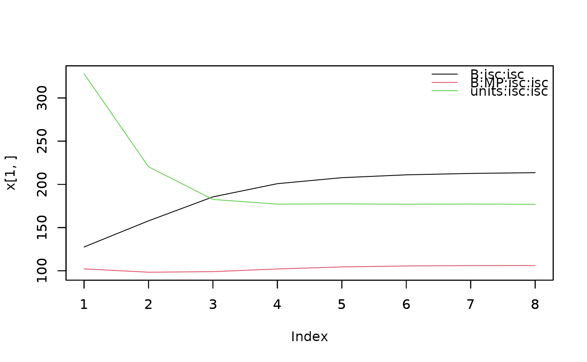

plot the change of VC across iterations
plot.monitor.Rdplot for monitoring.
Examples
data(DT_yatesoats)
DT <- DT_yatesoats
head(DT)
#> row col Y N V B MP
#> 1 1 1 91 0.2 Victory B2 Victory
#> 2 2 1 61 0 Victory B2 Victory
#> 3 3 1 121 0.4 Marvellous B2 Marvellous
#> 4 4 1 144 0.6 Marvellous B2 Marvellous
#> 5 5 1 149 0.6 GoldenRain B2 GoldenRain
#> 6 6 1 108 0.2 GoldenRain B2 GoldenRain
m3 <- mmec(fixed=Y ~ V + N + V:N,
random = ~ B + B:MP,
rcov=~units,
data = DT)
#> iteration LogLik wall cpu(sec) restrained
#> 1 -220.267 1:16:19 0 0
#> 2 -213.15 1:16:19 0 0
#> 3 -209.956 1:16:19 0 0
#> 4 -209.412 1:16:19 0 0
#> 5 -209.384 1:16:19 0 0
#> 6 -209.379 1:16:19 0 0
#> 7 -209.378 1:16:19 0 0
#> 8 -209.378 1:16:19 0 0
pmonitor(m3)
